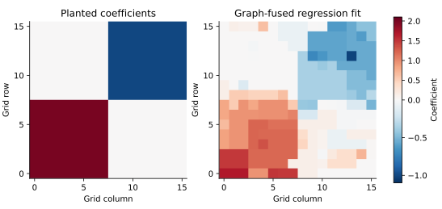
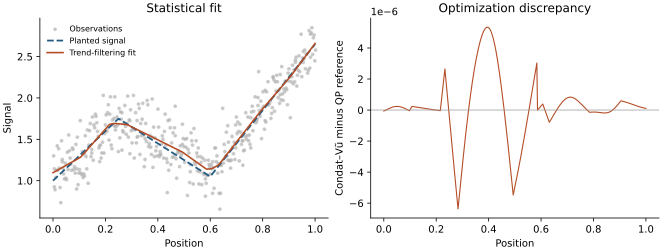

Choosing a splitting for a composite problem
An optimization algorithm is useful when it exposes operations that are easy for a particular problem. Comparing two implementations of the same iteration does not answer the more important question: could a different formulation exploit more structure?
These notes develop two examples for
\[\min_x F(x)=f(x)+g(x)+h(Dx).\]
The first is sparse regression with fusion over an irregular graph. It has two simple penalties whose joint proximal operator is difficult. The second is second-difference trend filtering. It fits the same template, but admits a specialized ADMM splitting built from a direct first-difference TV prox. They illustrate both the usefulness and the limitations of a general solver.
Read the examples in this order:
- Formulate the statistical objective and identify the operations available.
- Derive the primal–dual and ADMM updates.
- Construct an accuracy certificate independent of either stopping rule.
- Compare complete solves, including setup, and interpret the limitations.
The executable examples use only ProximalBase, ProximalSolvers and the standard library. Their small reference algorithms are teaching code in examples/support/primal_dual_lessons.jl, not additional public solvers. The separate benchmark environment adds JuMP and HiGHS for independent QP checks.
Why introduce a dual variable?
Suppose $g(x)=\lambda_1\|x\|_1$ and $h(z)=\lambda_2\|z\|_1$. Each has a simple soft-thresholding proximal operator. Nevertheless, for a general $D$,
\[\operatorname{prox}_{t(g+h\circ D)}(v) =\arg\min_x\left\{\tfrac12\|x-v\|^2 +t\lambda_1\|x\|_1+t\lambda_2\|Dx\|_1\right\}\]
is itself a coupled optimization problem. Soft-thresholding $Dv$ and then mapping back is not generally its solution. Nor can we generally compose the two proximal operators to get the proximal operator of the sum.
The conjugate identity gives
\[h(Dx)=\max_{\|y\|_\infty\leq\lambda_2}\langle Dx,y\rangle.\]
Consequently, the saddle problem has a smooth gradient in $x$, a separable proximal operation for $g$, and a box projection for $y$. Condat–Vũ uses
\[\begin{aligned} x^{k+1}&=\operatorname{soft}_{\tau\lambda_1} \{x^k-\tau[\nabla f(x^k)+D^\top y^k]\},\\ y^{k+1}&=\operatorname{clip}_{[-\lambda_2,\lambda_2]} \{y^k+\sigma D(2x^{k+1}-x^k)\}. \end{aligned}\]
For a global gradient bound $L$, positive steps must satisfy $\tau(L/2+\sigma\|D\|_2^2)<1$. The fixed-point conditions are
\[0\in\nabla f(x)+\partial g(x)+D^\top y,\qquad y\in\partial h(Dx).\]
For an edge with a positive difference, the second condition requires $y_e=\lambda_2$; a negative difference requires $y_e=-\lambda_2$; at a zero difference any coordinate in the box is allowed. The edge duals enter coefficient stationarity through $D^\top y$. Feasibility of the box alone does not guarantee optimality: both conditions must hold.
There is no joint proximal subproblem or matrix factorization. This separation is the central motivation of Condat's splitting method. The Primal–dual splitting guide explains step bounds, residuals, and the distinction between fixed-step convergence results and the optional adaptation heuristics.
This argument requires an actual difficulty in the joint prox. For ordinary chain-TV denoising, use the direct TotalVariation1D prox. For an arbitrary smooth loss plus chain TV, that same prox can be used inside proximal gradient or FISTA. A nonidentity design matrix alone does not make primal–dual splitting the preferred method. FusedLasso also supplies the joint prox for coefficient ℓ1 plus first-difference chain TV in ProximalBase.
Example 1: sparse regression with fusion over an irregular graph
Let a vertex represent a coefficient, and let an edge join two coefficients expected to have similar values. Choose an orientation for every edge and let $D$ be the incidence matrix: row $(i,j)$ contains $-1$ at $i$ and $+1$ at $j$. The orientation has no effect on $\|Dx\|_1$.
Consider
\[F(x)=\tfrac12\|b-Xx\|^2+\tfrac\mu2\|x\|^2 +\lambda_1\|x\|_1+\lambda_2\|Dx\|_1,\qquad \mu>0.\]
Coefficient sparsity and edge fusion have different meanings. A zero coefficient removes a vertex's effect; a zero edge difference identifies equal effects at two connected vertices. The ridge term stabilizes an underdetermined design and makes the minimizer unique. It also supplies the strong-convexity constant used below. Its inclusion is part of the estimator, not a numerical change we may silently add to an existing model.
Data and scaling
The reproducible example starts with a square grid and adds random nonlocal edges. Cycles and shortcuts remove the chain structure. The sparse design has $n=p/2$ observations and eight sampled entries per column, with repeated row indices combined by the sparse constructor. A few rectangular coefficient regions have distinct levels, and the observations include Gaussian noise. The graph is supplied to the estimator; it is not estimated from these data. Some shortcuts join different planted regions, so the graph prior is deliberately imperfect.
We use an unnormalized least-squares loss, $\mu=0.2$, $\lambda_1=0.05$ and $\lambda_2=0.2$. Replacing the loss by a sample mean without changing the penalties would define a different problem. These values illustrate optimization; they are not selected by cross-validation.

The display places coefficients at their original grid positions. The fitting graph also has nonlocal edges, which are not drawn. Shrinkage and fusion alter the planted levels; a correctly optimized estimator need not recover the true coefficient field exactly.
The executable graph-fusion example constructs the problem and checks two solutions. Its main call is represented by
f = Sum(LeastSquaresLoss(b, X), SqrNormL2(μ))
g, h = NormL1(λ1), NormL1(λ2)
L = opnorm(X, 1) * opnorm(X, Inf) + μ
normD = sqrt(opnorm(D, 1) * opnorm(D, Inf))
res = solve!(zeros(size(X, 2)), f, g, h, D,
CondatVu(; L, normD), options; gap = relative_certificate)Here relative_certificate is the callback derived below, and options sets its target. The bounds are conservative but require neither a dense SVD nor $X^\top X$. For an incidence matrix, $\|D\|_2^2\leq 2d_{\max}$, where $d_{\max}$ is the maximum vertex degree. Poor bounds can slow the method. Tightening a bound must preserve its validity; a numerical norm estimate is not automatically a certified upper bound.
A competing ADMM formulation
Introduce $z=Cx$ with $C=[I;D]$ and $q(z)=\lambda_1\|z_1\|_1+\lambda_2\|z_2\|_1$. Scaled ADMM gives
\[\begin{aligned} [X^\top X+\mu I+\rho C^\top C]x^{k+1} &=X^\top b+\rho C^\top(z^k-u^k),\\ z^{k+1}&=\operatorname{prox}_{q/\rho}(Cx^{k+1}+u^k),\\ u^{k+1}&=u^k+Cx^{k+1}-z^{k+1}. \end{aligned}\]
The proximal step is weighted soft thresholding. The system matrix is constant within a fit, so its Cholesky factorization can be reused. Forming the normal matrix and factoring it may be inexpensive on a small graph. On other graphs, fill-in can make a sparse input yield a much less sparse factor. A factorization can also be reused across penalty values if $X$, $D$, $\mu$ and $\rho$ remain fixed; the benchmark below measures fresh single fits.
Condat–Vũ instead applies $X$, $X^\top$, $D$ and $D^\top$ at every ordinary iteration. The tradeoff is cheaper steps versus the stronger subproblem solved by ADMM. Neither iteration count nor sparsity of the input alone determines the winner.
This reference implements ADMM for a general linear constraint. The package's ADMMSolver exposes an $x=z$ split, so it cannot simply be called on this objective to obtain these updates.
An independent QP reference
JuMP models residual variables $r=Xx-b$ and epigraph variables $t\geq\pm x$ and $v\geq\pm Dx$. The objective is
\[\tfrac12\|r\|^2+\tfrac\mu2\|x\|^2 +\lambda_1\mathbf1^\top t+\lambda_2\mathbf1^\top v.\]
HiGHS solves this convex QP independently of either splitting iteration. Residual variables preserve the sparse design in the model instead of explicitly expanding a potentially dense $X^\top X$. The difference of the two edge-constraint multipliers supplies the edge dual used by our certificate.
A common certificate for both examples
An objective difference from a reference value is useful, but does not by itself certify a solution. We can obtain a lower bound directly.
Suppose $f$ is $\mu$-strongly convex, $g(x)=\lambda_1\|x\|_1$ and $h(z)=\lambda_2\|z\|_1$. At any $x$ and any $\|y\|_\infty\leq\lambda_2$, define
\[\begin{aligned} m_x(z)&=f(x)+\langle\nabla f(x),z-x\rangle +\tfrac\mu2\|z-x\|^2,\\ \ell(x,y)&=\min_z\{m_x(z)+g(z)+\langle D^\top y,z\rangle\}. \end{aligned}\]
Strong convexity gives $m_x(z)\leq f(z)$, while dual feasibility gives $\langle y,Dz\rangle\leq h(Dz)$. Therefore
\[\ell(x,y)\leq F^*\leq F(x),\qquad 0\leq F(x)-F^*\leq G(x,y):=F(x)-\ell(x,y).\]
The lower model has a closed-form minimizer:
\[z_0=\operatorname{soft}_{\lambda_1/\mu} \left(x-\frac{\nabla f(x)+D^\top y}{\mu}\right).\]
Substituting $z_0$ into the expression for $\ell$ evaluates the bound using one gradient, matrix products, and soft thresholding. No reference optimum, inverse, or inner iteration is needed. For graph regression this lower model can be conservative: $G$ bounds suboptimality, but need not equal the exact Fenchel gap. For trend filtering below, the quadratic lower model is exact, so it is the usual primal–dual gap at a feasible edge dual.
All methods are evaluated at a feasible dual, clipping to the box when necessary, and use the same normalization
\[G_{\rm rel}=\frac{G}{\max\{1,|F(x)|,|\ell(x,y)|\}}.\]
The iterative algorithms check this certificate every 25 iterations and stop at $G_{\rm rel}\leq10^{-6}$. Clipping an ADMM multiplier constructs a valid certificate; it does not assert that ADMM's raw multiplier is already optimal. HiGHS uses its own tighter internal tolerances, and the same external certificate is checked at its returned solution. Thus the comparison enforces a common acceptance target, not identical numerical errors at termination.
Strong convexity also gives an interpretable coefficient bound:
\[\|x-x^*\|_2\leq\sqrt{2G(x,y)/\mu}.\]
The examples check that the distance between two computed solutions is no larger than the sum of their bounds. The QP checks also verify that objective and coefficient discrepancies lie within the certified bounds. A relative objective target does not imply the same relative accuracy in each coordinate, and none of these optimization checks validates statistical inference.
Example 2: second-difference trend filtering
For an equally spaced sequence, write $B_p$ for its first-difference matrix and $D_2=B_{p-1}B_p$. We solve
\[\min_x\ \tfrac12\|x-b\|^2+\lambda\|D_2x\|_1.\]
A zero second difference means a constant slope. The penalty therefore encourages piecewise linear fits. We use a signal with two slope changes, Gaussian noise, and $\lambda=8$. The differences are taken on the index grid. Rescaling to derivatives in physical time requires rescaling the operator and interpreting the penalty accordingly; comparisons must solve the same objective.
Condat–Vũ sets $g=0$, $h=\lambda\|\cdot\|_1$ and $D=D_2$. Ordinary ADMM instead splits $z=D_2x$; its system matrix is $I+\rho D_2^\top D_2$. Here that matrix is banded, so a factorization is much less threatening than for a general graph. This is already a meaningful alternative.
Retain the first-difference structure inside the prox
A stronger alternative introduces $\alpha=B_px$ and solves
\[\min_{x,\alpha}\ \tfrac12\|x-b\|^2 +\lambda\operatorname{TV}(\alpha) \quad\text{subject to}\quad \alpha=B_px.\]
Its updates are
\[\begin{aligned} (I+\rho B_p^\top B_p)x^{k+1} &=b+\rho B_p^\top(\alpha^k-u^k),\\ \alpha^{k+1} &=\operatorname{prox}_{(\lambda/\rho)\operatorname{TV}} (B_px^{k+1}+u^k),\\ u^{k+1}&=u^k+B_px^{k+1}-\alpha^{k+1}. \end{aligned}\]
The first system is tridiagonal. The second step uses ProximalBase's direct TotalVariation1D prox. This is the specialized splitting developed by Ramdas and Tibshirani, rather than a new algorithm introduced by this package. Our short reference uses $\rho=\lambda$ and reuses a tridiagonal Cholesky factor.
To apply the common certificate, let $v=\rho u$. The TV proximal step gives $v=B_{p-1}^\top y$ for a feasible difference dual, up to numerical error. With rows $(-1,+1)$, this relation implies $y_j=-\sum_{i\leq j}v_i$. The reference reconstructs these coordinates by cumulative summation and clips them before evaluation. This sign is important: the certificate uses $+D_2^\top y$ in primal stationarity.
The executable trend-filtering example checks all three solutions. A direct first-difference prox does not solve this second-difference problem in one call, but it is precisely what makes a better splitting possible. Specialized path algorithms and more elaborate trend-filtering implementations are additional alternatives; these few comparisons are not an exhaustive solver survey.

The left panel concerns statistical estimation; the right concerns numerical optimization. The fit can differ visibly from the planted signal even while the two optimization methods agree closely. The QP reference is itself a floating-point numerical solution, not an exact symbolic optimum.
Measured comparisons
The benchmark runs two graph sizes and two sequence lengths. It warms the complete call paths, repeats each method three times, and reports the measured run with median total time. Setup includes constructing/factoring ADMM systems or building the QP model; solve time includes scheduled certificate checks for the iterative methods. Data generation and compilation are excluded for all methods. The native solve includes its state initialization. Certificate evaluations after return, factor-size diagnostics, and result comparisons are validation work outside the measured solve.
Ordinary ADMM is reported at $\rho=1,10$ for graph regression and $\rho=1,10,100$ for trend filtering. None is claimed to be optimally tuned. Condat–Vũ uses the default bounded adaptation and restarts with certified norm bounds. No method receives a warm-started solution, and no path-level speedup is established. Each iterative run has a 200,000-iteration and 15-second solve limit. Runs that hit a limit are marked as unsuccessful at the common target; their elapsed times must not be compared as times to convergence.
The retained results and interpretation follow in the measurement record. The benchmark directory contains the independent QP model, raw CSV, source/environment record and recreation commands. JuMP/HiGHS stay outside the runtime and documentation dependencies.
What to take to another problem
Choose Condat–Vũ when the individual gradient/proximal operations are easy, the joint proximal operator is awkward, and matrix products are preferable to solving a coupled subproblem. Graph fusion with a sparse design is a natural example. This is a useful default candidate for a new formulation, not a promise that it will beat ADMM or a QP solver.
Prefer a direct or specialized method when it exposes more useful structure. For first-difference chain denoising, use the direct prox. For a smooth loss with a cheap joint penalty prox, try proximal gradient/FISTA. For trend filtering, compare a specialized splitting. For a problem with a reusable cheap factorization, give ADMM a serious comparison.
Finally, distinguish the mathematical algorithm from this implementation. The present examples exercise CPU dense vectors and sparse real matrices. They do not demonstrate GPU execution, a general matrix-free operator API, or sparse storage for all work arrays. The accuracy certificate here uses an explicit positive strong-convexity constant; dropping ridge from an underdetermined graph regression invalidates this particular certificate, even though the convex problem may still be solvable by Condat–Vũ.
Exercises
- Remove the graph shortcuts. Which matrix products change, and how much does ADMM factor fill-in change? Keep the objective and accuracy target fixed when comparing implementations of the same instance.
- Compare fresh fits with a sequence of penalty levels. Reuse ADMM's factor when its matrix is unchanged, and warm start both primal and dual iterates for Condat–Vũ. Report the entire path cost for both.
- Decrease $\mu$ in graph regression. Explain separately its effect on the estimator, the optimization conditioning, and the conservatism of the certificate. Why is simply setting $\mu=0$ in the formula invalid?
- Replace second differences by first differences. Compare a direct TV call, Condat–Vũ, and ADMM. Explain why the direct solution changes the appropriate baseline.
- Tighten the common target from $10^{-6}$ to $10^{-8}$. Do the timing rankings persist? Check certificate validity and coefficient discrepancies, rather than relying only on solver status messages.
Further reading
- L. Condat (2013). A primal–dual splitting method for convex optimization involving Lipschitzian, proximable and linear composite terms.
- A. Ramdas and R. J. Tibshirani (2016). Fast and flexible ADMM algorithms for trend filtering.
- T. B. Arnold and R. J. Tibshirani (2016). Efficient implementations of the generalized lasso dual path algorithm.
- Y.-X. Wang, J. Sharpnack, A. J. Smola and R. J. Tibshirani (2016). Trend filtering on graphs.